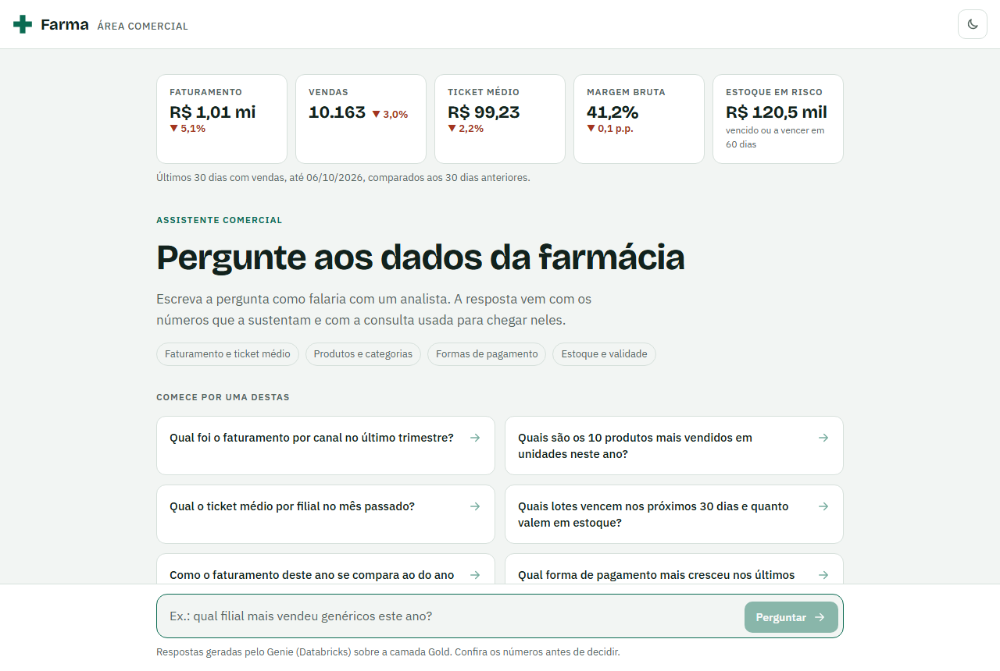

Projeto ERP Farma · Databricks
Pipeline de dados, dashboard comercial e um assistente que responde perguntas de negócio em português.
O pedido
erp_farma.Dados de origem
Tudo é fictício: laboratórios, clientes, CPFs e códigos de barras. O gerador é reprodutível e tem 10 testes automatizados.
Pipeline
databricks bundle deploy.| Faturamento Gold x Silver | R$ 32,39 mi, diferença zero |
| Vendas: Bronze → Silver | 351.137 → 349.236 |
| Chaves duplicadas na Silver | nenhuma |
| Chaves órfãs nos fatos | nenhuma |
A diferença entre Bronze e Silver são as duplicatas e os registros reprovados nas regras de qualidade.
Entrega 1 · Dashboard
15 visuais em uma página, atualizados automaticamente ao fim de cada carga. Publicado no workspace como "Farma - Análise Comercial" e aprovado na revisão.
Entrega 2 · Chatbot
| Faturamento por canal no último trimestre | Correto |
| Ticket médio por filial no mês passado | Correto |
| Categorias que vendem mais no inverno | Correto |
| Valor de estoque vencido por filial | Correto |
| Nome e CPF dos maiores clientes | Recusou |
| Forma de pagamento que mais cresceu | Corrigido |
| Faturamento de clientes fidelidade | Corrigido |
As duas respostas fracas foram resolvidas acrescentando regras de negócio às instruções: o que significa "crescimento" e como tratar vendas sem cliente identificado.
O serviço do Genie falhou de forma passageira em 2 de 17 perguntas. A mesma pergunta funcionou na tentativa seguinte.
Entrega 3 · Página web

O navegador fala com um servidor intermediário, e só ele chama a API do Genie. Nenhuma credencial do Databricks vai para a página.
Situação e próximos passos